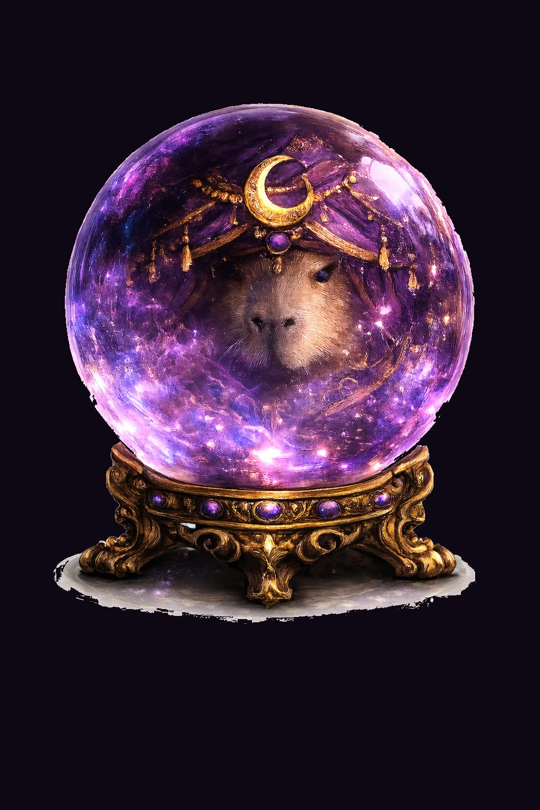
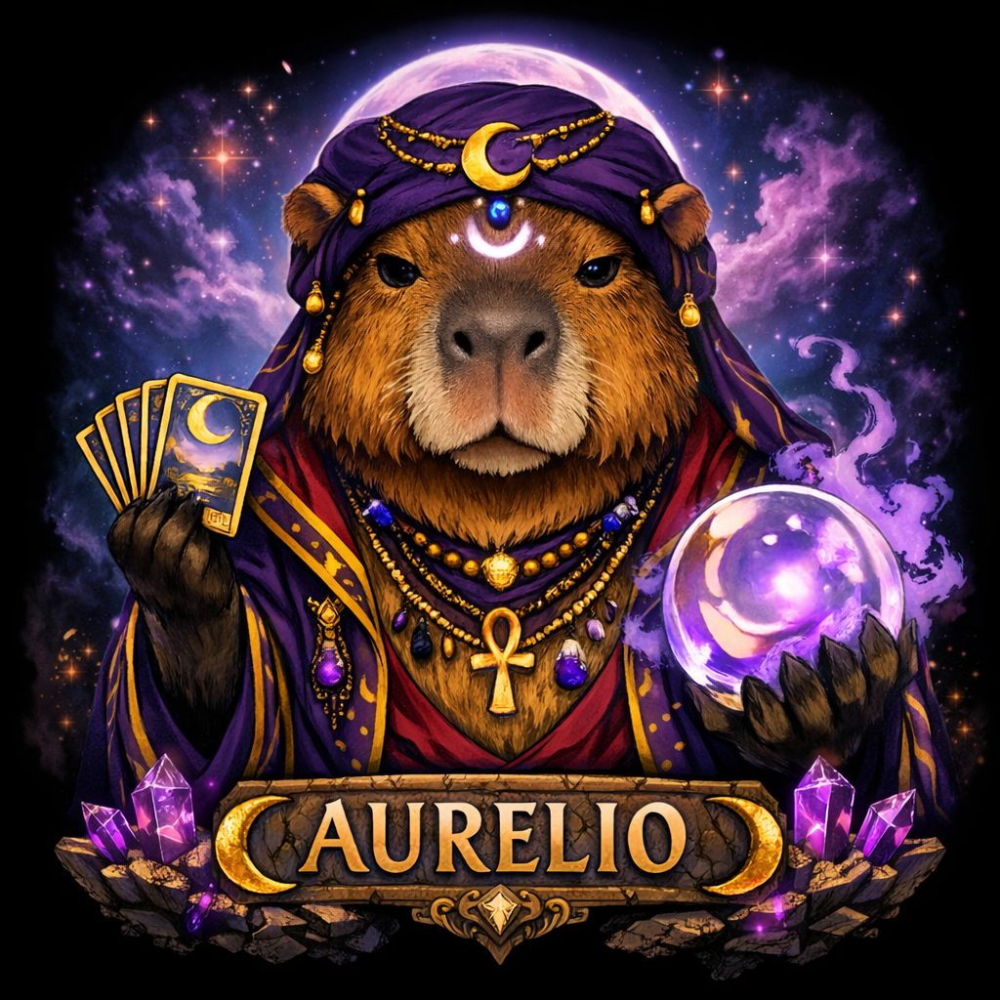
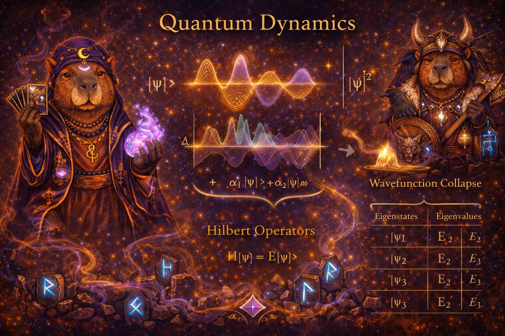
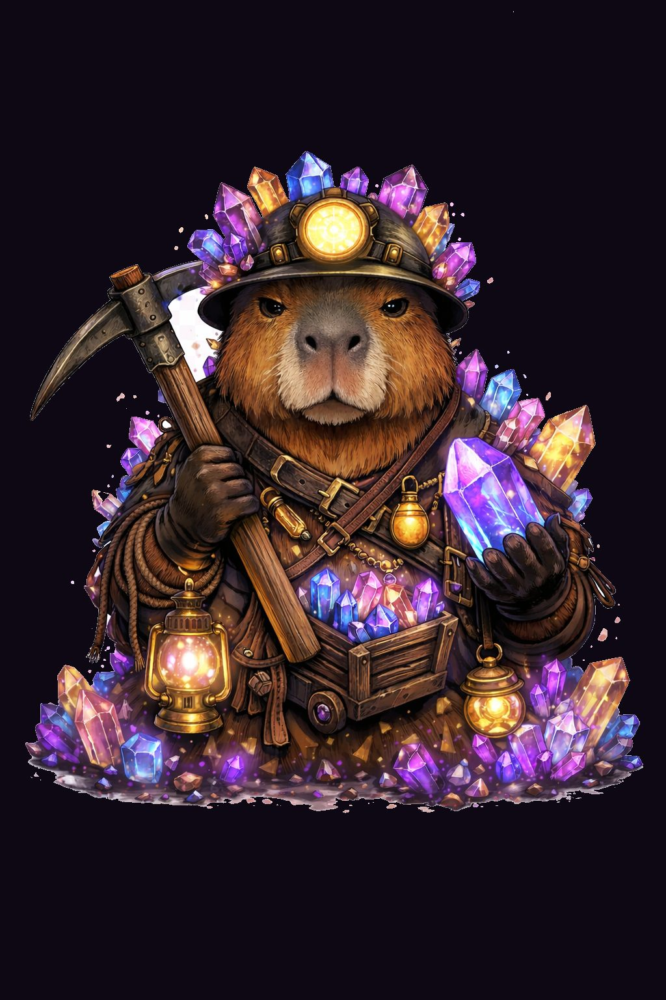
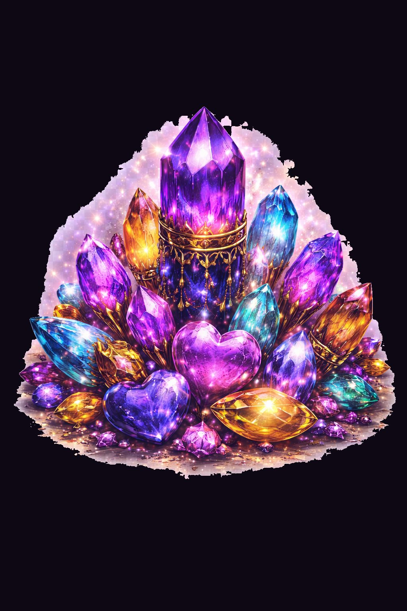
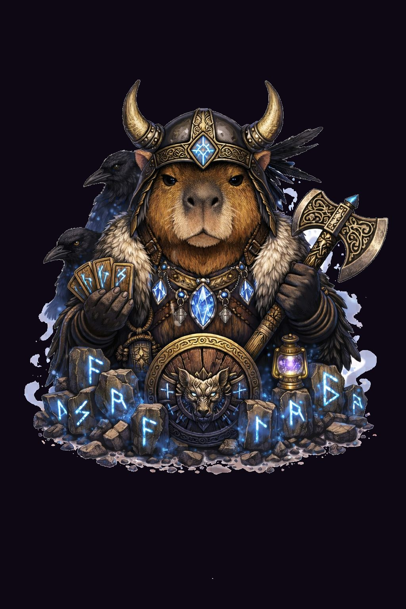
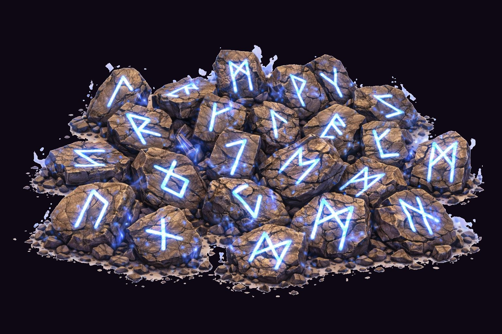

Tarot Quick Pulse · 15 мин
Быстрый расклад «где я и куда дальше» — любовь, деньги, работа, энергия.
по запросу

Аурелио спрашивает 🐾
Deutsch, English или Русский — я сразу открою нужную версию. ✨
Aurelio smirks 🐾
Let’s begin. ✨
CAPYTAROT
⚡ ЛОВИ ВАЙБ
Аурелио — ярмарочная легенда, интуитивный аналитик и мистический сторителлер в одном образе. От Quantum Wave Tarot до астрологии и тем Schumann resonance: мягкая capy-энергия снаружи, точная и практичная интерпретация внутри.

Аурелио соединяет ярмарочный инстинкт и современную мистическую практику: спокойный в подаче, точный в интерпретации. Он считывает паттерны в картах, таймингах, языке и настроении — и переводит их в ясные следующие шаги.
Быстрый расклад «где я и куда дальше» — любовь, деньги, работа, энергия.
по запросу
Глубокое погружение: корень вопроса, скрытые паттерны, блоки и чёткий следующий ход.
по запросу
Таро + кристаллы в одном ритуале: наводим фокус и включаем внутренний навигатор на 7 дней.
по запросу
Живой оракул для ивентов, поп-апов и ретритов. Гости в восторге, контент — вирусный.
по запросу

История начинается как легенда, а заканчивается точным попаданием: в деревне между туманом и ярмарочным светом Аурелио делал первые расклады и видел исходы до того, как события становились очевидны. То, что выглядело шоу, стало его фирменным стилем: ясный прогноз, спокойная подача, ноль драмы.
Сегодня он сочетает Quantum Wave Tarot, астрологический тайминг, практики с оргонитом и интерпретацию Schumann resonance. Суть проста: Аурелио не продаёт туман — он даёт точные сигналы, которые можно применять в реальности.
Таро как поле возможностей.
Quantum Wave Tarot — современный подход, который соединяет классические карты с новой перспективой. Вместо жёстких предсказаний расклад показывает, какие решения и линии развития сейчас имеют наибольший потенциал.
Карты читаются не по отдельности, а как динамический узор символов и взаимных влияний. Так становятся заметны скрытые факторы, конкурирующие варианты и вероятные сценарии.
В центре метода — особая структура расклада и короткий фокус-ритуал, который помогает увидеть ситуацию яснее. Quantum Wave Tarot — это не столько классический оракул, сколько инструмент ориентации, рефлексии и поиска новых возможностей.

Полный набор в одной галерее: 24 Старших Аркана и четыре туза как представители Младших Арканов.



Кристаллы здесь — не «волшебная таблетка», а твой энергетический апгрейд. Они собирают фокус, выравнивают состояние и помогают не сливаться, когда вокруг турбулентность.


Руны — это режим «без фильтров». Древняя система, которая не ходит вокруг да около. Где таро даёт сюжет, руны дают направление: коротко, точно и иногда с эффектом «ну да, попали».
